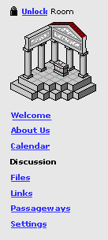
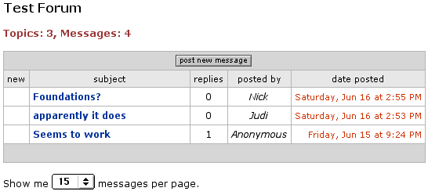

Individual Rooms can have one discussion board [2]. Group rooms have one by default [1]. Owners of individual rooms can get a discussion board on request.[2]
If a visitor visits the Discussion page on a room before a discussion board has been created, they will see a message that "A discussion board has not yet been created for this office".
To set up a discussion board, the owner of an room can click on the Discussion link; if a discussion does not already exist, they can click on the Create discussion board button.
|  |
Discussion A discussion
board has not yet been created for this office. |
Once a discussion board has been created, it will appear in this area for all users.[1] Prometheus comes with discussion board support, and we will likely replicate much of the same functionality that Prometheus already offers.
However, the Prometheus discussion board interface in non-standard and pretty ugly. I suggest that we model our interface after better designs such as Jive's software's discussion board (see example below) which offers a clear, simple interface that is well-liked by users.
|
Discussion  |
Our discussion board will offer the standard discussion board features, including
Future releases may support upload of files [3], marking of posts as favorites that are saved under Me [2], marking of users as favorites to be notified when they post something new [3].